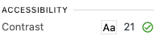

A level: Basic web accessibility features. This level addresses the most basic web accessibility features.
AA level: Deals with the biggest and most common barriers for disabled users. This level is generally the target for most websites.
AAA level: The highest and most complex level of web accessibility. This level is typically not required for most websites as it is very difficult to achieve.
The contrast between the text color and the background color should be at least 4.5:1 for normal text and 3:1 for large text.
This is an example of good contrast. The text color is black, and the background color is white. 
This is an example of bad contrast. The text color is light gray, and the
background color is light gray.